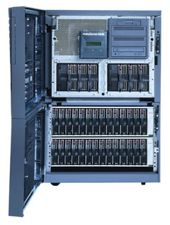

Глобализация бизнеса, мобильные вычисления, широкое использование Интернета, корпоративных интра- и экстрасетей, ориентация на заказчика - все эти тенденции требуют отказоустойчивых, бесперебойно функционирующих компьютерных решений. Такие решения зависят от вычислительных систем - их надежности, средств резервирования и способности к безостановочной работе 24 часа в сутки и 365 дней в году (24х365). Требования к корпоративным вычислениям и динамические изменения в компьютерной среде создают все большие трудности в управлении такой средой и в достижении высокого уровня доступности приложений. Издержки, связанные с простоями, продолжают расти. Эти потери выражаются в упущенных деловых возможностях, снижении уровня доверия заказчиков и в прямом ущербе деловой репутации компании. Даже несколько минут простоя ответственных приложений могут иметь для компании серьезные финансовые последствия.
Не случайно поэтому около половины общего рынка серверов составляют RISC/UNIX-серверы. Эти компьютеры могут обеспечить высокий уровень надежности, доступности, масштабируемости и управляемости. Их отличает невысокое значение коэффициента цена/производительность и довольно низкий показатель совокупной стоимости владения (TCO). RISC/UNIX-серверы можно найти в филиалах крупных банков, на производстве, в телекоммуникационных компаниях, в правительственных организациях и исследовательских лабораториях, на транспорте. Один из лидеров в производстве таких серверов - корпорация Compaq Computer (http://www.compaq.com), выпускающая, в частности, семейство компьютеров AlphaServer.
Всего в мире произведено уже более миллиона процессоров Alpha. Они установлены в более чем полумиллионе серверов и рабочих станций. Среди 250 тыс. подобных систем сегодня насчитывается более 100 тыс. серверов уровня предприятия. Серверы на Alpha-процессорах активно внедряются в сферу Интернета и его приложений. На Alpha-серверах работают такие популярные сайты, как Amazon.com, Lycos, Excite, Netscape, AltaVista, и другие. В прошлом году все серии серверов на процессорах Alpha были полностью обновлены. Сегодня это одна из наиболее мощных и масштабируемых архитектур, построенная на быстродействующих 64-разрядных процессорах. Масштабируемость - это немаловажная характеристика архитектуры Alpha-серверов: ведь одной из проектных целей при создании архитектуры Alpha было обеспечение возможности масштабирования в 1000 раз, причем этот запас был рассчитан на 25 лет.
В 1988 г. корпорация Compaq купила не менее известную компанию Digital Equipment Corporation (DEC), тем самым получив возможность предлагать рынку полный спектр продуктов - от настольных и мобильных ПК до законченных решений для информатизации крупных компаний. Сразу после приобретения DEC Compaq вложила более 200 млн. долл. в разработку элементной базы, проектирование новых серверов AlphaServer и развитие ПО. Выпуская новые модели компьютеров на платформе Alpha, Compaq подтверждает свою ориентацию на несколько важнейших вертикальных корпоративных рынков - это системы связи и телекоммуникаций, финансовые корпорации, интегрированные системы управления производством и органы государственного управления.
По данным IDC, в прошлом году Compaq стала самой быстро растущей компьютерной компанией в UNIX-сегменте рынка серверов. Продолжая лидировать на рынке систем уровня подразделения (системы средней стоимостью от 250 тыс. до 1 млн. долл.) с долей рынка 29%, Compaq также добилась доли в 19,6% от общего дохода на рынке.
Традиционные области применения Alpha-серверов - это системы управления уровня предприятия, или ERP-системы (Enterprise Resource Planning). Наиболее известны здесь такие приложения, как SAP, Oracle Applications и Baan. Alpha-cистемы активно используются для создания хранилищ данных и средств их обработки (Data Warehousing/Business Intelligence). В этой области можно отметить продукты таких фирм, как Oracle, Informix, Sybase, SAS Institute, SAP. Кроме того, платформы Alpha применяются в решениях для высокопроизводительных технических вычислений (High Performance Technical Computing, HPTC), финансовых рынков и услуг (банков, бирж), Интернета, научных исследований, управления производством. Особо стоит отметить рынки расчетов для биотехнологических и других исследований, на которых в настоящее время идет взрывной рост, а технология Alpha полностью отвечает под предъявляемым ими требованиям к скорости и производительности счета.
Микропроцессоры
Одна из явно привлекательных черт 64-разрядной архитектуры заключается в гибкости подобного подхода, позволяющего конфигурировать компьютеры для решения разнообразных задач, которые практически невозможно решить на системах с 32-разрядными процессорами. В частности, существенно увеличиваются размеры адресного пространства, что позволяет строить VLM-системы (Very Large Memory - с очень большим объемом ОЗУ), которые и обеспечивают высокую производительность современных СУБД и механизмов обработки транзакций. Помимо этого становится возможным помещать все обрабатываемые данные в ОЗУ, так что время доступа к ним сокращается до наносекунд (доступ к информации на жестких дисках происходит в сотни и тысячи раз медленнее). Если 32-разрядные системы способны адресовать лишь 4 Гбайт ОЗУ, то 64-разрядная архитектура Alpha рассчитана на поддержку до 8 Тбайт физической памяти.
Итак, в феврале 1992 г. корпорация DEC представила 64-разрядную RISC-архитектуру Alpha. Она была спроектирована с учетом трех основных особенностей, которые наиболее существенно влияют на производительность, - это тактовая частота, возможность множественной обработки инструкций и многопроцессорность. Первой в семействе микропроцессоров Alpha появилась модель 21064 (кодовое обозначение EV4). При соблюдении проектных норм 0,75 мкм ее максимальная частота достигала 200 МГц. В процессоре 21064 была реализована 128-разрядная внешняя шина; в кэш-памяти первого уровня на данные и команды отводилось по 8 Кбайт. Процессор имел конвейерную архитектуру и эффективные средства организации мультипроцессорных систем.
21064 стал первым процессором, занесенным в Книгу рекордов Гиннесса, - в 1992 г. он был назван самым быстрым в мире. Через некоторое время после выпуска 21064 200 МГц вышла модернизированная версия процессора 21064A (EV45), которая впоследствии выпускалась с тактовыми частотами 200, 233, 275 и 300 МГц. Кодовые обозначения EV в моделях кристаллов означают не что иное, как Extended VAX, так как процессоры Alpha наследовали архитектуре VAX/VMS корпорации DEC и обеспечивают совместимость с процессорами VAX при выполнении операций с плавающей запятой. Первая цифра, следующая за буквами EV в обозначении процессоров Alpha, - это номер поколения. Если в обозначение входит еще одна цифра, это означает, что процессор изготовлен по более прогрессивной технологии, чем первый процессор данного поколения.
В 1994 г. корпорация DEC представила новый микропроцессор семейства Alpha - модель 21164 (EV5). Первые чипы производились с соблюдением проектных норм 0,5 мкм. Если первые образцы этого процессора имели частоту 250 МГц, то теперь такие кристаллы работают с частотой до 700 МГц. На площади 298 кв. мм размещено около 9,3 млн. транзисторов, большинство из которых используется для реализации кэш-памяти. 21164 - это процессор с суперскалярной архитектурой, способной обрабатывать до четырех инструкций за один цикл. Он объединяет в себе кэш-память данных и команд первого уровня, а также высокопроизводительную и емкую кэш-память второго уровня. Микропроцессор 21164 использует высокопроизводительный 128-разрядный интерфейс для доступа к памяти, а также имеет возможность подключения кэш-памяти третьего уровня.
На кристалле процессора находится три блока кэш-памяти: команд (8 Кбайт), данных (8 Кбайт) и кэш-память второго уровня. Отличительная особенность этой модели - размещение на кристалле вторичной трехканальной множественно-ассоциативной кэш-памяти емкостью 96 Кбайт. Она резко снижает количество обращений к внешней шине микропроцессора. Емкость кэш-памяти третьего уровня у систем, выполненных на базе процессора 21164, варьируется в широком диапазоне - от 1 до 8 Мбайт (хотя теоретически они могут поддерживать до 64 Мбайт). При частоте 366 МГц DEC 21164 потреблял мощность 28 Вт. Кристаллы паковались в 499-контактные корпуса PGA. Alpha 21164 еще называют процессором BIPS, потому что это первый в мире процессор, преодолевший рубеж в миллиард операций в секунду (Billion Instructions Per Second).
Процессор 21164 значительно увеличил свою вычислительную мощность в 1996 г. в модификации EV56 с тактовой частотой свыше 400 МГц, а в декабре 1997 г. его частота достигла 625 МГц. Проектные нормы для новых кристаллов составили 0,35 мкм. EV56 был первым процессором, в котором был изменен набор команд Alpha. Дело в том, что для достижения максимальной производительности RISC-процессорам необходимо выравнивание данных до 64-разрядной длины. Первые процессоры Alpha тратили впустую такты для компенсации невыровненных данных, обрабатываемых программами, которые были написаны для процессоров семейства Intel x86. В процессоре EV56 происходит выравнивание до целого числа байтов и слов, чтобы ускорить конвертацию x86-кодов.
Спустя некоторое время после выпуска 21164 компания DEC совместно с Mitsubishi разработала процессор 21164PC (PCA56). С целью снижения себестоимости из него убрали кэш-память второго уровня (96 Кбайт), компенсировав это увеличением кэш-памяти команд с 8 до 16 Кбайт; при этом можно было подключить внешнюю кэш-память второго уровня размером от 512 Кбайт до 4 Мбайт. Количество транзисторов на кристалле уменьшилось до 3,5 млн. штук. При соблюдении проектных норм 0,35 мкм тактовая частота кристалла достигала 533 МГц. При их ужесточении до 0,28 мкм (модель PCA57) она была повышена до 600 МГц.
В декабре 1998 г. был объявлен новый микропроцессор Alpha - 21264 (EV6). В нем применены 2-канальные частично-ассоциативные I- и D-кэши (с отложенной записью) для команд и данных емкостью 64 Кбайт каждый. Но главное отличие Alpha 21264 от 21164 - это применение внеочередного выполнения команд и переименование регистров "на лету". Если модель 21164 имеет 32 целочисленных регистра и 32 регистра с плавающей запятой, то в 21264 есть 80 целочисленных физических регистров (имеется даже 2 копии этого файла) и 72 физических регистра с плавающей запятой. Внеочередное выполнение команд осуществляется как для очереди целочисленных команд, так и для очереди команд с плавающей запятой. 21264 способен выполнять до шести команд за такт (поддерживаемый уровень - четыре команды за такт). В это число включены также команды загрузки регистров и записи в память.
| Микропроцессор Alpha.
|
Для максимального увеличения производительности в архитектуре чипов заложено несколько конструктивных решений. За каждый цикл выполняется выборка четырех команд, и их быстрое исполнение значительно повышает скорость работы. Благодаря переименованию регистров каждая ссылка при записи в регистр получает уникальный адрес. Таким образом, удается избежать зависимости от регистров, создающих потенциально узкие места в производительности процессора. Интересно и еще одно архитектурное решение: выполнение команд с изменением их очередности позволяет обрабатывать команды в порядке, отличном от порядка их выборки. Фактически команды выполняются, как только это становится возможным, что обеспечивает высокую скорость обработки.
Кроме того, в процессорах Alpha 21264 применяется выборка команд "по предположению" и их обработка, хотя заранее неизвестно, участвует ли команда в итоговом маршруте выполнения. Это особенно полезно, например, когда процессор 21264 предсказывает направление переходов и следует по предсказанному маршруту. Развитые средства предсказания переходов в чипе 21264 в сочетании с динамическим выполнением позволяют максимально распараллелить выполнение команд приложений.
64-разрядная системная шина 21264 может работать на частотах до 333 МГц. Фактически она осуществляет соединение "точка-точка". В многопроцессорной системе каждый процессор 21264 имеет свой канал в оперативную память, хотя пропускная способность самой системы памяти разделяется процессорами. Каждый процессор должен иметь собственное соединение с реализующим интерфейс системной шины набором микросхем 21272 (Tsunami). Этот чипсет состоит из C-, P- и D-кристаллов. C-чипы обеспечивают командный интерфейс между процессорами и оперативной памятью. D-чипы реализуют маршруты передачи данных для процессоров, оперативной памяти и устройств ввода-вывода. P-чипы обеспечивают интерфейс для двух независимых 64-разрядных 33-МГц шин PCI.
Первоначально кристаллы 21264 (EV6) создавались с соблюдением проектных норм 0,35 мкм (технологический процесс CMOS-6), что позволяло на площади кристалла 302 кв. мм разместить 15,2 млн. транзисторов. При этом достигалась тактовая частота 575 МГц. При ужесточении норм до 0,28 мкм, благодаря технологическому процессу CMOS-7 (модель 21264А, EV67), в 1999 г. частота была увеличена до 750 МГц. В конце прошлого года для модели EV68 стали применяться проектные нормы 0,18 мкм. Кроме того, в EV68 была увеличена емкость кэш-памяти второго уровня (8 Мбайт против 4 Мбайт). И, конечно же, для этой реализации характерны более высокие скорости работы: если тактовая частота микросхем EV67 не поднимается выше 750 МГц, для EV68 этот показатель составляет уже 833 МГц. Уже в этом году в компьютерах должен появиться процессор EV68 с медными межсоединениями вместо алюминиевых, работающий на частотах свыше 1 ГГц.
В ближайшем будущем ожидается выпуск микропроцессора 21364 (EV7), который будет использовать ядро 21264, однако на его кристалле, содержащем 100 млн. транзисторов, будут также интегрированы частично ассоциативный кэш второго уровня емкостью 1,5 Мбайт, контроллер памяти, поддерживающий работу с динамической памятью Direct Rambus, и сетевой интерфейс. При соблюдении проектных норм 0,18 мкм тактовые частоты превысят 1 ГГц. В модели EV7 значительно возрастет полоса пропускания на уровне самого процессора (до 6,4 Гбайт/с). Фактически EV7 представляет собой целую мини-систему с огромной полосой пропускания, высокоскоростными портами и собственной памятью. Такая конструкция обеспечит сокращение задержек и по крайней мере удвоит производительность исполнения приложений на симметричных многопроцессорных системах даже без повышения тактовой частоты.
Серверы AlphaServer
В семейство AlphaServer входит четыре серии серверов: AlphaServer DS, AlphaServer ES, AlphaServer GS и AlphaServer SC. Серия компьютеров HPC (High Perfomance Computing) базируется на моделях серии ES, которые включаются попарно и позволяют достичь мощности суперкомпьютера при сравнительно невысокой цене. Если в моделях AlphaServer DS используется обычно не более двух 64-разрядных процессоров 21264, то в серверах AlphaServer СS их может быть несколько сотен (до 512).
AlphaServer DS
Компьютеры DS10 используются в основном в качестве графических станций или небольших серверов для телекоммуникационных и Интернет-приложений, а также в качестве систем для разработки и отладки ПО. В частности, системы DS10, DS10L и DS20 эффективно используются в качестве Web-серверов. Они обеспечивают оптимальное распределение нагрузки при большом числе пользователей или транзакций между несколькими вычислительными системами сравнительно небольшой производительности. Цена модели начального уровня DS10 не превышает 5 тыс. долл. Сорок систем DS10L можно установить в одну аппаратурную стойку. Это очень компактные машины по приемлемой цене. Типичные покупатели таких систем - поставщики услуг Интернета (ISP) и провайдеры аренды приложений (ASP), а также телекоммуникационные компании. Эти серверы используются и для научно-технических расчетов, но не по одному, а в кластерах, позволяющих вести счет параллельно.
| AlphaServer DS10L.
|
| AlphaServer DS10.
|
Традиционная шинная архитектура заменена в этих компьютерах на систему межсоединения на базе коммутации. Причем межсоединение в таких системах осуществляется с помощью набора специализированных микросхем, а трафик распределяется по нескольким маршрутам.
Младшие модели серверов выпускаются в двух конструктивах: это либо конструкция корпуса, традиционная для настольных корпоративных ПК (DS10, XP900): 4 слота PCI и возможность установки до трех жестких дисков, либо сверхплоский корпус с минимальными возможностями расширения (DS10L) - один слот PCI, в стандартную поставку не входят CD-ROM и флоппи-дисковод. Основное применение последних - коммуникационный сервер для поддержки асинхронных каналов передачи данных, брандмауэр или прокси-сервер, работающий в автономном режиме.
Упрощенная конструкция серверов не предусматривает функций обеспечения отказоустойчивости, таких как замена жестких дисков, блоков питания или вентиляторов "на ходу", или резервирования компонентов. Оба варианта системы могут быть установлены в 19-дюймовые направляющие с помощью специальных кронштейнов. Недостаток места внутри корпусов для установки жестких дисков и других систем хранения данных легко компенсируется использованием внешних систем хранения данных StorageWorks. Так, даже сверхплоский вариант сервера можно подключить к дисковой подсистеме емкостью в несколько терабайт. Несмотря на небольшие размеры, эти серверы имеют полную функциональность под управлением ОС Tru64 UNIX или OpenVMS, в частности могут входить в состав кластеров.
В компьютере допускается использование жестких дисков с интерфейсом IDE, однако в тех случаях, когда необходимо обеспечить высокую производительность, рекомендуются жесткие диски с интерфейсом SCSI, для которых необходимо установить дополнительный SCSI-адаптер.
Система AlphaServer DS20E может содержать один или два модуля процессоров. Кроме микросхемы Alpha 21264 модуль включает кэш-память второго уровня и преобразователь DC-DC ("постоянный ток в постоянный ток") с радиатором. Этот преобразователь подает питание на кристалл Alpha. В модуле EV6 объем кэш-памяти второго уровня 4 Мбайт, а в модуле EV67 - 8 Мбайт.
| AlphaServer DS20E.
|
Коммутируемое межсоединение позволяет передавать по двум независимым шинам памяти огромные объемы данных. Каждая шина имеет ширину 256 разрядов (32 байта) и работает с тактовой частотой 83 МГц. Это позволяет получить пропускную способность 2,67 Гбайт/с на каждую шину (32х83 МГц). Максимальная пропускная способность системы достигает 5,2 Гбайт/с (2,67х2). В системе применяются две 64-разрядные шины PCI. Для контроллеров доступно шесть слотов: пять -- для PCI и один -- для ISA.
Данные модели серверов поддерживают до семи встроенных устройств хранения данных, включая накопитель CD-ROM, флоппи-дисковод и один дополнительный 5,25-дюймовый дисковод со сменным носителем. Всего в систему можно установить до 72,8 Гбайт встроенной дисковой памяти. В отсек для дисков монтируется до четырех дисковых накопителей Ultra2 SCSI (емкостью 9,1 или 18,2 Гбайт). Ultra2 SCSI - это универсальные 1,6-дюймовые дисководы со скоростью вращения 10 тыс. об/мин. В конфигурацию данной системы могут входить дополнительные контроллеры PCI RAID.
Система AlphaServer DS20E выпускается в тумбовом и стоечном исполнении. Используемые компоненты идентичны для обоих вариантов, просто в стойке шасси повернуто на 90 градусов. Стойка имеет высоту 5U и может монтироваться в 67- или 79-дюймовом шкафу M-серии вместе с дополнительными дисководами.
С каждой системой поставляется ПО Compaq Insight Manager - инструментальное средство, обеспечивающее мониторинг и управление серверами платформы Alpha. Интегрированная консоль дистанционного управления (RMC) позволяет оператору выполнять несколько задач с последовательной консоли: мониторинг питания системы, температуры, вентиляторов, сброс системы, останов, включение/отключение питания. Мониторинг можно проводить как в локальном, так и в удаленном режиме (через модем).
AlphaServer ES
Увеличенная производительность систем AlphaServer ES40 представляет непосредственный интерес для тех, кто работает с приложениями, активно использующими ресурсы центрального процессора, такими как средства интеллектуальной обработки и анализа данных. Применение этих машин позволит всегда иметь самый оперативный срез информации в системах управления производственными цепочками, анализа деловых тенденций или управления отношениями с клиентами (CRM). Более быстрая обработка данных означает возможность иметь более точное представление о состоянии дел, а значит принимать более эффективные и лучше учитывающие потребности бизнеса решения. С вычислительной точки зрения большинство приложений этого типа представляет собой единый поток данных, для обработки которого наиболее эффективно небольшое количество мощных процессоров.
На рынке предлагаются две модели систем AlphaServer ES40: система начального уровня, поддерживающая 16 модулей DIMM (общая емкость памяти 16 Гбайт) и имеющая шесть слотов PCI, и система, поддерживающая 32 модуля DIMM (до 32 Гбайт ОЗУ) и 10 слотов PCI. Как и в младших моделях, традиционная шина заменена здесь на систему межсоединений на базе коммутации, благодаря чему при увеличении рабочей нагрузки скорость обмена сохраняется на прежнем уровне. Набор микросхем поддерживает уже до четырех процессоров и до 32 Гбайт ОЗУ.
|  | AlphaServer ES40.
|
Во всех вариантах системы применяется одно и то же шасси, перед которым остается пространство для двух дисковых отсеков. Каждый из них может содержать до четырех однодюймовых универсальных дисковых накопителей Ultra2 SCSI. Шасси имеет отделение для процессоров, памяти и одной или двух PCI-плат ввода-вывода. Помимо этих отсеков спереди находятся панель управления, привод CD-ROM и флоппи-дисководы, а также два дополнительных отсека для устройств со сменным носителем. В задней части системы расположены блоки питания. Там же имеются разъемы для доступа к двум коммуникационным портам, одному модемному порту (для консоли дистанционного управления), одному параллельному порту и двум портам USB. На задней панели есть также два закрытых гнезда для SCSI.
Данные системы выпускаются в трех вариантах: в корпусах типа "пьедестал", "башня" и в стоечном исполнении. В корпусе "пьедестал" имеется дополнительное место для устройств хранения данных. Шасси монтируется над секцией, вмещающей до трех отсеков StorageWorks (два спереди и один сзади). В башенном исполнении шасси развернуто на 90 градусов. При этом панель управления и отсеки для устройств со сменным носителем сохраняют горизонтальное положение (они установлены так же, как в стоечном варианте и в "пьедестале"). При инсталляции в стойке шасси имеет ту же ориентацию, что и в варианте корпуса "пьедестал". Его можно монтировать в 67- или 79-дюймовом шкафу (типа RETMA шириной 19 дюймов). Каждая система требует вертикального пространства в 14 дюймов (8U). Всего шкаф может содержать до четырех систем и двух отсеков StorageWorks. Если нужно установить максимальное число дисков (шесть отсеков), то в шкаф монтируются три системы.
Системы имеют резервные вентиляторы и блоки питания, а жесткие диски можно заменять в "горячем" режиме. Консоль дистанционного управления RMC передает предупреждения и регистрирует возможные ошибки. К ней можно обращаться даже в том случае, если система полностью остановлена.
Системы AlphaServer ES40 рассчитаны на работу под управлением ОС Tru64 UNIX, OpenVMS и Linux. Существующие средства построения кластеров на базе Tru64 UNIX и OpenVMS в сочетании с соответствующими встроенными особенностями систем AlphaServer ES40 позволяют добиться чрезвычайно высокого уровня готовности при хороших показателях удобства в администрировании.
При использовании ОС Tru64 UNIX и OpenVMS можно создать отказоустойчивые кластеры с помощью соединения PCI - Memory Channel, которое представляет собой шину коммуникации на базе PCI с высокой пропускной способностью и малым временем задержки. С ее помощью можно связать друг с другом до восьми систем AlphaServer. Данные, записываемые в память одного компьютера, могут использовать другие компьютеры, подключенные к шине Memory Channel. Основные способы кластеризации систем AlphaServer ES40 зависят от операционной системы.
AlphaServer GS
Системы AlphaServer GS разработаны специально для поддержки самых мощных приложений электронного бизнеса. Как правило, они обеспечивают значительно более высокую производительность и меньшую совокупную стоимость владения по сравнению с конкурирующими системами. На базе возможностей кластеризации, которые предоставляются ОС Compaq Tru64 UNIX или OpenVMS, модели GS обеспечивают постоянную готовность в режиме 24x7. Модульная архитектура систем обеспечивает высокую масштабируемость. А использование динамических аппаратных и программных разделов позволяет оперативно реагировать на изменения нагрузки, не прерывая функционирования системы, за счет возможности одновременной работы нескольких ОС, объединения серверов и центров обработки данных, а также простоты повторного развертывания имеющихся ресурсов.
AlphaServer GS80 представляет собой систему в одной стойке, поддерживающую до 8 микропроцессоров Alpha, 64 Гбайт памяти и 16 шин PCI с 56 гнездами PCI и общей внутренней полосой пропускания свыше 13 Гбайт/с. Архитектура этой системы позволяет создавать один или два системных раздела.
Сервер GS160 - это двухкорпусная система, поддерживающая до 16 процессоров, 128 Гбайт памяти и 32 шины PCI со 112 гнездами PCI и общей внутренней полосой пропускания более 26 Гбайт/с. Она позволяет создавать до четырех системных разделов. С добавлением третьего процессорного корпуса система расширяется и превращается в Compaq AlphaServer GS320. Этот сервер поддерживает до 32 процессоров Alpha EV67, 256 Гбайт памяти и 64 шины PCI с 224 гнездами PCI и общей полосой пропускания более 63 Гбайт/с. Он позволяет создавать до восьми системных разделов. Начиная с однопроцессорной системы GS160, можно без нарушений работы или простоев довести ее до полной 32-процессорной GS320, обеспечив при этом поддержку памяти объемом 256 Гбайт. Все эти системы будут поддерживать несколько поколений микропроцессоров Alpha.
| AlphaServer GS160.
|
Операционные системы
Но не только в архитектурных решениях кроются преимущества компьютеров Alpha. Объединение аппаратного и программного комплекса родило понятие платформы Alpha, т.е. модельного ряда полностью совместимых и масштабируемых компьютеров, оснащенных 64-разрядными операционными системами. Первоначально DEC ориентировалась на использование ОС OpenVMS, разработанной для больших компьютеров и применявшейся до того десять с лишним лет. Кроме того, разработчики Digital создали собственную версию UNIX - Tru64 UNIX. За время, прошедшее с момента выпуска первой системы на процессоре Alpha, созданы и поддерживаются наборы компиляторов, библиотек и средства разработчика. Стоит отметить, что одним из преимуществ платформы Alpha стали решения в области построения кластеров.
ОС OpenVMS была пионером в реализации принципов создания кластеров и остается лидером в данной области. Так, OpenVMS Cluster позволяет создавать 96 и более узлов с полностью кооперативным совместным использованием ресурсов - систем хранения данных, файлов и даже отдельных записей. При этом каждая система имеет отдельное оборудование, может запускаться и останавливаться независимо. Приложения и многоуровневые продукты допускают динамическое обновление, новые устройства хранения данных также можно добавлять и заменять в "горячем" режиме, а обновление ОС OpenVMS развертывается во всем кластере поэтапно - останавливать его работу для этого не требуется.
OpenVMS Galaxy позволяет выполнять в одной системе несколько экземпляров OpenVMS. В отличие от средств аппаратного секционирования здесь конфигурацию этих экземпляров можно изменять динамически, а в отличие от виртуальной машины данные экземпляры равноправны - они работают параллельно и имеют прямой доступ к аппаратным средствам. Каждый экземпляр OpenVMS Galaxy можно запускать и останавливать отдельно. Вычислительная среда OpenVMS Galaxy предлагает широкие возможности масштабирования в SMP-конфигурациях. Более того, средства OpenVMS Galaxy допускают гибкое выделение экземплярам системных ресурсов. Это удобно для балансирования постоянно меняющейся системной нагрузки, отвечает требованиям тестирования и обновления приложений, приведения конфигурации в соответствие с нуждами компании.
Операционная система Tru64 UNIX опирается на мощную многопользовательскую многозадачную 64-разрядную архитектуру ядра, основанную на ядре Mach версии 2.5, которое было создано в университете Carnegie Mellon. Кроме того, она включает компоненты из Berkeley Software Distribution (BSD), System V от UNIX System Laboratories и из других источников программного обеспечения, а также общедоступные продукты и разработки корпорации Compaq Computer. Tru64 UNIX поддерживается на всех серверах и рабочих станциях Alpha, имеющих не менее 64 Мбайт оперативной памяти. Tru64 UNIX обеспечивает производительность, масштабируемость, надежность и высокую готовность, присущие операционной системе UNIX, устраняя при этом трудности, связанные с управлением сложной системой.
Прощай, Alpha, - здравствуй, Itanium
Увы, даже самые изящные технические разработки часто должны подчиняться суровым законам бизнеса. В конце июня стало известно, что Compaq и Intel приняли решение о совместных технических разработках, направленных на развитие технологии параллельных вычислений в мощных вычислительных системах. В рамках соглашения о долгосрочном сотрудничестве компания Compaq передает корпорации Intel важные средства разработки и технические ресурсы, относящиеся к процессорам Alpha, а также предоставляет лицензии на процессорные технологии и компиляторы.
Компания Compaq заявляет, что будет продолжать разработку и выпуск новых систем AlphaServer на базе существующих и будущих процессоров Alpha вплоть до 2003 г. Нынешним летом компания планирует модернизировать существующие серверы серии AlphaServer GS с использованием процессоров Alpha с тактовой частотой 1 ГГц. Разрабатываемый в настоящее время процессор 21364 (EV7) будет использован в новой модели AlphaServer, выпуск которой намечен на конец следующего года.
Преимущества микропроцессора 21464 (Arana, EV8), анонс которого был намечен на 2004 г., теперь, видимо, найдут свое воплощение в будущих поколениях Itanium. Напомним, что данный кристалл должен был содержать 250 млн. транзисторов. Его ключевой особенностью стало бы одновременное мультипотоковое исполнение SMT (Simultaneus MultiThreading) - аппаратный механизм, аналогичный по своей идее распараллеливанию вычислений. Он, в частности, сулит существенный выигрыш в производительности приложений для симметричных многопроцессорных систем: увеличение производительности в два раза, причем для его реализации потребуется увеличить площадь микросхемы процессора лишь на 10%. Кристалл должен был содержать четыре независимых конвейера, одновременно обрабатывающих инструкции. Проще говоря, на одном чипе в этом случае содержалось бы четыре виртуальных процессора, имеющих равноправный доступ к кэш-памяти емкостью 4 Мбайт. Кристаллы планировалось выпускать с соблюдением проектных норм 0,125 мкм, использованием медных межсоединений и технологии "кремний на изоляторе" SOI (Silicon On Insulator). Благодаря этому тактовая частота могла бы достичь значения 2 ГГц.
К 2004 г. Compaq консолидирует все свое семейство 64-разрядных серверов на базе архитектуры Itanium. Причем по условиям соглашения Compaq незамедлительно начинает перенос своих операционных систем Tru64 UNIX, OpenVMS, NonStop Kernel и средств разработки для них на семейство процессоров Itanium. Немаловажным можно считать то обстоятельство, что в Intel из Compaq переходит и команда разработчиков. Своим клиентам корпорация предоставит широкую техническую поддержку, направленную на обеспечение плавного перехода на новую технологию.